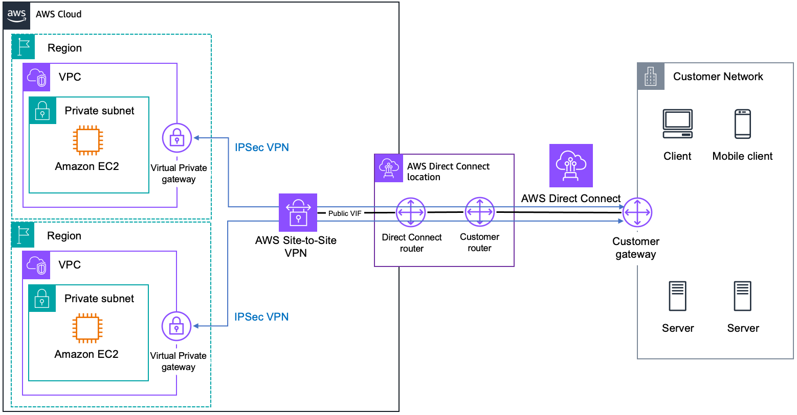

Direct Connect - Public VIF
Public VIF
- Access Public Zone Services e.g. Elastic IP, Public services (SNS, SQS, S3 etc.)
- No direct access to private VPC services
- Can accessl all public zone regions accross AWS Global Network. No regional limitations.
- AWS Advertise all AWS public IP ranges to you
- Optioally, advertise any public IPs you own over BGP
- Supports Bi-directional BGP communities
- Prefixes you advertise are not transitive. Prefixes don't leave AWS
Create Public VIF
- Pick the connection Pubic VIF will run over
- Interface owner - this account or another
- VLAN - 802.1Q - needs to match customer config
- BGP ASN of on-premise public (which you own) or private (64512 to 65535)
- MD5 Authentication
- Optional Peering IPs
- Which Prefixes you want to advertise. AWS will need to verify to avoid issues with BGP
Public VIF
- Access Public Zone Services e.g. Elastic IP, Public services (SNS, SQS, S3 etc.)
- Direct path to AWS public endpoints
- Lower latency than Internet-based access
- No direct access to private VPC services
- Requires Private VIF for VPC access
- Cannot be used to access VPC endpoints
- Can access all public zone regions across AWS Global Network. No regional limitations.
- Traffic stays on AWS backbone network
- Better performance than Internet routing
- AWS Advertises all AWS public IP ranges to you
- Includes all AWS public service IPs
- Updated automatically as AWS adds new services/regions
- Optionally, advertise any public IPs you own over BGP
- Must provide proof of IP ownership
- Limited to 1,000 prefixes (hard limit)
- Supports Bi-directional BGP communities
- Enables fine-grained routing control
- Useful for traffic engineering
- Prefixes you advertise are not transitive. Prefixes don't leave AWS
- AWS doesn't advertise your prefixes to other customers
- Security feature to prevent unauthorized routing
Create Public VIF
- Pick the connection Public VIF will run over
- Can use dedicated or hosted connections
- Minimum connection speed: 1Gbps
- Interface owner - this account or another
- Supports cross-account sharing
- Requires acceptance from owner account
- VLAN - 802.1Q - needs to match customer config
- Valid range: 1-4094
- Must be unique per connection
- BGP ASN of on-premise public (which you own) or private (64512 to 65535)
- Public ASN requires verification
- Cannot use AWS reserved ASNs
- MD5 Authentication
- Required for BGP session security
- Must match on both ends
- Optional Peering IPs
- Auto-assigned if not specified
- Uses /30 CIDR for IPv4
- /125 CIDR for IPv6
- Which Prefixes you want to advertise. AWS will need to verify to avoid issues with BGP
- Must provide ROA (Route Origin Authorization)
- Verification can take up to 72 hours
Additional Important Notes:
- Monitoring:
- CloudWatch metrics available for connection monitoring
- BGP session status monitoring recommended
- Security Considerations:
- Traffic is not encrypted by default
- Consider implementing additional security measures
- Use MD5 authentication for BGP sessions
- Limitations:
- Maximum of 50 Public VIFs per DX connection (soft limit)
- 1,000 prefix advertisement limit
- Cannot access VPC private resources directly
Public VIF - Comprehensive Study Guide
- Core Configuration:
- Enables access to AWS public services (S3, SNS, SQS, etc.)
- No VGW required - connects directly to AWS public zone
- Can access all AWS regions (no regional restrictions)
- Supports both IPv4 and IPv6 (separate BGP sessions)
- Cannot access private VPC resources directly
- BGP Configuration:
- AWS advertises all public IP ranges
- Customer can advertise their public IP prefixes (requires verification)
- Supports bi-directional BGP communities
- MD5 authentication required for BGP sessions
- Maximum 1,000 prefixes can be advertised (hard limit)
- Routing & Addressing:
- Uses /30 CIDR for IPv4 BGP peering
- Uses /125 CIDR for IPv6 BGP peering
- Supports auto-assigned or custom peer IPs
- Non-transitive routing (prefixes don't leave AWS)
- Supports jumbo frames (9001 MTU)
- Security Features:
- Traffic is not encrypted by default (Important!)
- Mandatory BGP MD5 authentication
- IP prefix verification required
- ROA (Route Origin Authorization) verification
- Performance & Connectivity:
- Direct path to AWS public endpoints
- Lower latency than Internet-based access
- Traffic stays on AWS backbone network
- Minimum connection speed: 1Gbps
- Limitations:
- Maximum 50 Public VIFs per DX connection (soft limit)
- 1,000 prefix advertisement limit (hard limit)
- Cannot access VPC private resources
- IP prefix verification can take up to 72 hours
- Best Practices:
- Implement redundant connections for high availability
- Use BFD for faster failover detection
- Regular monitoring of BGP session status
- Maintain accurate documentation of advertised prefixes
- Troubleshooting Checklist:
- Verify BGP session status
- Check MD5 authentication matching
- Validate advertised prefixes
- Confirm VLAN configuration
- Monitor CloudWatch metrics
Key Differences from Private VIF:
- No VGW requirement
- Global service access (not region-restricted)
- Requires public IP ownership verification
- Mandatory MD5 authentication
- Different prefix advertisement limits
Exam Tips:
- Understand public service access patterns
- Know BGP community usage
- Remember prefix advertisement limits
- Understand verification requirements
- Know troubleshooting steps
Note: For exam preparation, focus on understanding the differences between Public and
Private VIFs, routing behaviors, and security requirements.
- Public VIF terminates on an AWS-owned virtual gateway/router in the AWS Direct Connect location.
Direct Connect - Public VIF + VPN

With AWS Direct Connect + AWS Site-to-Site VPN, you can combine AWS Direct Connect connections with an AWS-managed VPN solution. AWS Direct Connect public VIFs establish a dedicated network connection between your network and public AWS resources such as an AWS Site-to-Site VPN endpoint. Once you establish the connection to the service, you can create IPsec connections to the corresponding Amazon VPC virtual private gateways. The following figure illustrates this option.
This solution combines the benefits of the end-to-end secure IPsec connection with low latency and increased bandwidth of the AWS Direct Connect to provide a more consistent network experience than internet-based VPN connections. A BGP connection session is established between AWS Direct Connect and your router on the public VIF. Another BGP session or a static route will be established between the virtual private gateway and your router on the IPsec VPN tunnels.
AWS Direct Connect + AWS Site-to-Site VPN
What is AWS Site-to-Site VPN?
VPN Endpoint vs VGW
- VPN Endpoint is an AWS-managed component that exposes a public IP and acts as the entry point for the Site-to-Site VPN connection.
- VGW (Virtual Private Gateway) is the internal AWS component that facilitates private communication between your on-premises network and AWS VPC.
- The VPN Endpoint serves as a relay point between your on-premises network and the VGW, which routes traffic within the VPC over private IPs.
IPsec Tunnel
- When the IPsec VPN tunnel is established, your on-premises network connects to the AWS VPN Endpoint (public IP).
- Once the tunnel is established, all communication between your on-premises network and the VPC happens over private IPs routed through the VGW.
Public VIF + Direct Connect
- Public VIF connects to public-facing AWS services over Direct Connect.
- For Site-to-Site VPN, the Public VIF allows your on-premises network to connect to the public IP of the VPN Endpoint (AWS-managed).
- Private VIF is for private connections to VPC resources but does not support VPN tunnels.
- The Public VIF enables encrypted communication via IPsec and establishes the tunnel to the AWS VPN Endpoint.
Traffic Flow
- The VPN Endpoint (exposed through the public-facing IP) accepts the IPsec connection.
- The IPsec tunnel is established over the public VIF, but once the tunnel is up, the communication uses private IPs via the VGW.
- The VGW is responsible for routing the traffic to/from your VPC after the IPsec tunnel is established.
Key Points
- VPN Endpoint = AWS-managed component exposing a public IP for Site-to-Site VPN termination.
- VGW = internal component inside AWS for routing traffic within the VPC using private IPs.
- Public VIF connects to the VPN Endpoint over Direct Connect for establishing the VPN tunnel.
- Private VIF is used for private, direct connectivity to AWS resources but does not support VPN tunnels.
Public VIF + VPN
- Encrypted and Authenticated Tunnel
- Over Direct Connect - Low Latency & Consistent Latency
- Public VIF + VGW/TGW Public Endpoints. Provides Access to Private VPC Resources but Connects to the VGW/TGW Public Endpoints.
- Transit Agnostic - Can be via Direct Connect or via Public Internet
- End-to-End Encryption from CGW to VGW/TGW. On the contrary, MACSEC is single hop based
- Wide Vendor Support
- VPN has more cryptographic overhead vs MACSEC. VPN has speed limit compared to MACSEC.
- Can be used while DX is being provisioned and/or as a Direct Connect backup
Public VIF + VPN Integration
- Core Benefits:
- Encrypted and Authenticated Tunnel
- IPSec encryption for data privacy
- IKE for key exchange and authentication
- Over Direct Connect - Low Latency & Consistent Latency
- Predictable performance characteristics
- Dedicated bandwidth allocation
- Connectivity Architecture:
- Public VIF + VGW/TGW Public Endpoints
- Provides access to private VPC resources
- Connects via public endpoints of VGW/TGW
- Transit Agnostic
- Flexible routing via Direct Connect or Internet
- Supports failover scenarios
- Security Features:
- End-to-End Encryption from CGW to VGW/TGW
- Different from MACSEC's hop-based encryption
- Complete path protection
- Wide Vendor Support
- Compatible with most VPN devices
- Flexible implementation options
- Performance Considerations:
- VPN has more cryptographic overhead vs MACSEC
- Maximum throughput: up to 1.25 Gbps per tunnel
- Can use multiple tunnels for higher throughput
- Speed limitations compared to MACSEC
- MACSEC supports higher throughput
- Lower latency with MACSEC
- Use Cases:
- Temporary connectivity during DX provisioning
- Backup for Direct Connect
- Failover capability
- Disaster recovery scenarios
- Additional security layer for sensitive data
Best Practices:
- Implement redundant tunnels for high availability
- Monitor VPN tunnel status using CloudWatch
- Regular testing of failover scenarios
- Maintain updated routing policies
Key Considerations for Exam:
- Understand encryption differences between VPN and MACSEC
- Know performance limitations and throughput caps
- Understand failover scenarios and configurations
- Be aware of use cases for combining Public VIF with VPN
Direct Connect - Bidirectional Forwarding Detection
Bidirectional Forwarding Detection
- Objecive is Improve Failover Time. Faster failover the better.
- Without BFD, BGP Keep Alives at 30 seconds. Hold-down timer starts at 0 and counts up to 90
- Every keep alive resets to 0. If counter reaches 90, VIF is deemed unreachable
- BFD failover can be in less than a second
- AWS BDF liveness detection interval is 300ms
- BFD liveness detection multiplier is 3. If device fails liveness check 3 times, then it is deemed unhealthy
- AWS BFD failover can occur in 900ms. AWS VIFs enabled by default. Customer side configuration is needed. BGP Options.
Bidirectional Forwarding Detection (BFD)
- Purpose and Objective:
- Primary goal is to improve failover time
- Faster detection of path failures
- Reduces network convergence time
- Standard BGP Behavior (Without BFD):
- BGP Keep Alive interval: 30 seconds
- Hold-down timer mechanism:
- Starts at 0 and counts up to 90 seconds
- Reset to 0 with each keep-alive message
- VIF marked unreachable if counter reaches 90
- Total potential downtime: up to 90 seconds (Important!)
- BFD Configuration Parameters:
- AWS BFD liveness detection interval: 300ms
- Checks connection status every 300ms
- Cannot be modified
- BFD liveness detection multiplier: 3
- Three consecutive failed checks required
- Device marked unhealthy after 3 failures
- BFD Performance:
- Sub-second failover capability
- Typically less than 1 second
- Significant improvement over standard BGP
- AWS BFD failover time: 900ms (300ms × 3)
- Calculation: detection interval × multiplier
- Consistent and predictable failover timing
- Implementation Details:
- Enabled by default on AWS VIFs
- Customer-side configuration required
- Must be configured in customer router BGP options
- Check vendor-specific configuration guides
Best Practices:
- Always enable BFD on customer equipment when possible
- Test failover scenarios regularly
- Monitor BFD session status
- Document configuration parameters
Key Exam Points:
- Remember the key timings:
- 300ms detection interval
- Multiplier of 3
- 900ms total failover time
- Understand the difference between:
- Standard BGP failover (up to 90 seconds)
- BFD failover (sub-second)
- Know that it's enabled by default on AWS side
Note: BFD is crucial for maintaining high availability in Direct Connect
implementations.
Direct Connect - BGP Communities
BGP Communities
- eExtra metadata (labels/tags) attached to advertised prefixes
- Well-Known predifined labels.
- NO_EXPORT - Don't advertise to EXTERNAL peers. AWS use this for incoming
- NO_ADVERTISE - Don't advertise to any peers
- Regular BGP communities - 32 bit value, split into 2 x 16
- AS_NUMBER:OPERATOR_ASSIGNED_VALUE e.g. 7224:9100 7224:8100
- BGP Operators (you or AWS) act on advertisement based on communities
- Purpose:
- Control how far AWS advertise our routes
- Allows administrators to define rules, handle incoming prefix advertisements based on community tags.
- Local preference
BGP Communities - Comprehensive Guide
- Basic Concept:
- Extra metadata (labels/tags) attached to advertised prefixes
- Acts like route attributes
- Influences routing decisions
- Well-Known Communities:
- NO_EXPORT (0xFFFFFF01)
- Don't advertise to EXTERNAL BGP peers
- AWS uses this for incoming routes
- Keeps routes within AS boundary
- NO_ADVERTISE (0xFFFFFF02)
- Don't advertise to any BGP peers
- Most restrictive community
- Regular BGP Communities Structure:
- 32-bit value format
- Split into 2 × 16-bit segments
- Format: AS_NUMBER:OPERATOR_ASSIGNED_VALUE
- Example: 7224:9100, 7224:8100
- AWS-Specific Communities:
- Common AWS community values:
- 7224:7100 - Routes learned from public VIF
- 7224:7200 - Routes learned from private VIF
- 7224:8100 - Control route propagation
- Operational Aspects:
- BGP Operators (AWS or Customer) actions:
- Process routes based on community tags
- Apply routing policies
- Implement traffic engineering
- Primary Purposes:
- Route Advertisement Control
- Control propagation scope
- Manage route visibility
- Administrative Control
- Define routing policies
- Handle prefix advertisements
- Based on community tags
- Traffic Engineering
- Influence path selection
- Set local preferences
- Control load balancing
Best Practices:
- Document community usage
- Consistent community tagging strategy
- Regular audit of community-based policies
- Monitor route propagation effects
Common Use Cases:
- Regional route control
- Service-specific routing
- Traffic engineering
- Security policy implementation
Exam Tips:
- Know the well-known communities
- Understand AWS community numbers
- Remember community format (AS:VALUE)
- Understand use cases and applications
Note: BGP communities are crucial for implementing sophisticated routing policies in AWS
Direct Connect environments.
AWS Direct Connect - BGP Communities Comprehensive Guide
1. BGP Communities Overview
- Purpose:
- Control routing scope (Regional or global)
- Influence route preferences
- Manage traffic flow patterns
- Enable load balancing
- Key Concepts:
- Inbound policies (customer to AWS)
- Outbound policies (AWS to customer)
- Reserved range: 7224:1 – 7224:65535
- NO_EXPORT community tag usage
2. Public Virtual Interface Communities
- Inbound Scope Communities:
- 7224:9100 - Local AWS Region only
- Restricts advertisement to local region
- 7224:9200 - Continental scope
- North America
- Asia Pacific
- Europe, Middle East, Africa
- 7224:9300 - Global (all public AWS Regions)
- Default if no community specified
- Outbound Route Communities:
- 7224:8100 - Same region routes
- 7224:8200 - Same continent routes
- No tag - Other continent routes
3. Private and Transit Virtual Interface Communities
- Local Preference Communities:
- 7224:7100 - Low preference
- 7224:7200 - Medium preference
- Default for same-region connections
- 7224:7300 - High preference
4. Routing Policy Hierarchy
- Evaluation Order:
- 1. Longest prefix match
- 2. Local preference (BGP communities)
- 3. AS_PATH length
- 4. MED (Multi-Exit Discriminator)
- 5. ECMP (Equal-cost multi-path)
5. Implementation Scenarios
- Active/Active Configuration:
- Use same community tag across connections
- Typically use 7224:7200 (medium preference)
- Enables ECMP load balancing
- Works across regions
- Active/Passive Configuration:
- Primary path: 7224:7300 (high)
- Backup path: 7224:7100 (low)
- Automatic failover capability
- Clear path preference
6. Important Considerations
- Public VIF Specifics:
- All routes tagged with NO_EXPORT
- Must own advertised prefixes
- No transitive routing
- Source validation enforced
- Private/Transit VIF Specifics:
- Supports public or private prefixes
- ECMP supported with same attributes
- Region association influences routing
- Local preference tags are mutually exclusive
7. Best Practices
- Route Advertisement:
- Use specific routes for better control
- Consider regional traffic patterns
- Plan failover scenarios
- Document community usage
- Monitoring:
- Track route propagation
- Monitor path selection
- Verify community tag effects
- Check failover behavior
Key Exam Points:
- Know community tag values and their purposes
- Understand routing policy hierarchy
- Remember NO_EXPORT behavior
- Understand Active/Active vs Active/Passive configurations
- Know regional and continental scoping options
| Scope BGP Communities (Inbound) |
Value |
Description |
| Local AWS Region |
7224:9100 |
Advertise only to local AWS Region |
| Continental Regions |
7224:9200 |
Advertise to all regions in continent (NA, APAC, or EMEA)
|
| Global |
7224:9300 |
Advertise to all public AWS Regions (default) |
| Route Origin Communities (Outbound) |
Value |
Description |
| Same Region |
7224:8100 |
Routes from same AWS Region as DX location |
| Same Continent |
7224:8200 |
Routes from same continent as DX location |
| Other Continents |
No tag |
Routes from other continents |
| Local Preference Communities |
Value |
Usage |
| Low Preference |
7224:7100 |
Backup/passive paths |
| Medium Preference |
7224:7200 |
Default for same-region, Active/Active setup |
| High Preference |
7224:7300 |
Primary/active paths |
| Route Selection Priority |
Description |
| 1. Longest Prefix Match |
Most specific route wins |
| 2. Local Preference |
Higher local preference wins |
| 3. AS_PATH Length |
Shorter AS path wins |
| 4. MED |
Lower MED value wins |
| 5. ECMP |
Load balance across equal paths |
Note: All public VIF routes are tagged with NO_EXPORT community by AWS
Source: link
Direct Connect - Direct Connect Gateway
Direct Connect Gateway - Virtual Gateway and VIF
- Direct connect is a regional service. Physical connection
- Port on DX Router connected to a Customer Router in DX Locations. Customer Premises to 1+DX Locations
- Public VIF can access all AWS Public Regions
- Private VIF can only access VPC's in the same AWS Region via VGWs. Historically only way to terminate Private VIF
- You can only connect VPCs in the same region as the Direct Connect
Direct Connect Gateway
- Global Network Device - Accessible in all regions
- Associate Private VIF with DX Gateway (any region) instead of VGW. Connects OnPremise with DX Gateway
- Associate VGW attached to VPC (any region) to the Direct Connect Gateway
- Allows all VPC to route to the OnPremise Network and vice versa
- However, VPCs cannot communicate with other VPCs in the same DX Gateway. No inter-VPC routing allowed.
- 1 Private VIF = 1 DX Gateway. 1 DX Gateway allows up to 10 VGW connections
- 1 DX can have 50 Private VIFs. So 1 DX can have 50 DX Gateway thus allowing 500 (50x10) VPC connections.
- DX Gateway can be shared. You can have a shared services VPC where DX Gateway is provisioned and shared with other org accounts.
Traditional Direct Connect (Pre-DX Gateway)
- Direct connect is a regional service. Physical connection
- Available in specific AWS Direct Connect locations
- Supports 1Gbps, 10Gbps, and 100Gbps ports
- Port on DX Router connected to a Customer Router in DX Locations. Customer Premises to 1+DX Locations
- Can use multiple connections for redundancy
- Public VIF can access all AWS Public Regions
- Through AWS global network backbone
- No regional restrictions for public services
- Private VIF can only access VPC's in the same AWS Region via VGWs
- Regional limitation with traditional Direct Connect
- One-to-one relationship between Private VIF and VGW
- You can only connect VPCs in the same region as the Direct Connect ✓
- This was a key limitation before DX Gateway
- Led to the development of DX Gateway solution
Direct Connect Gateway (Current Capability)
- Global Network Device - Accessible in all regions
- Associate Private VIF with DX Gateway (any region) instead of VGW. Connects OnPremise with DX Gateway
- Removes regional limitations
- Single connection point for multi-region access
- Associate VGW attached to VPC (any region) to the Direct Connect Gateway
- Allows all VPC to route to the OnPremise Network and vice versa
- However, VPCs cannot communicate with other VPCs in the same DX Gateway. No inter-VPC routing allowed
- Use Transit Gateway for inter-VPC routing
- 1 Private VIF = 1 DX Gateway. 1 DX Gateway allows up to 10 VGW connections
- Soft limit, can be increased via support ticket
- 1 DX can have 50 Private VIFs. So 1 DX can have 50 DX Gateway thus allowing 500 (50x10) VPC connections
- DX Gateway can be shared. You can have a shared services VPC where DX Gateway is provisioned and shared with
other org accounts
- Uses Resource Access Manager (RAM)
- Works within AWS Organizations
Key Evolution Points:
- Traditional Direct Connect (Pre-DX Gateway):
- Regional limitation for Private VIFs
- One-to-one VIF to VGW relationship
- Limited scalability for multi-region deployments
- DX Gateway Benefits:
- Global connectivity capability
- Simplified multi-region architecture
- Increased scalability and flexibility
AWS Direct Connect - DX Gateway - Comprehensive Study Guide
1. Direct Connect Fundamentals
- Basic Architecture:
- Physical dedicated network connection between on-premises and AWS
- Available speeds: 1Gbps, 10Gbps, 100Gbps (Dedicated)
- Hosted connections: 50Mbps to 10Gbps (via Partners)
- Regional service - Connections terminate at DX locations
- Components:
- DX Location (Physical facility)
- DX Router (AWS side)
- Customer Router
- Virtual Interfaces (VIFs)
- Virtual Private Gateway (VGW) or Direct Connect Gateway
2. Virtual Interfaces (VIFs) Types
- Private VIF:
- Connects to VPC resources (private IP addresses)
- Requires VGW or DX Gateway
- One-to-one relationship with VGW (traditional model)
- Must be in same region as DX (when using VGW)
- Maximum 50 Private VIFs per DX connection
- Public VIF:
- Access to AWS public services
- Global access (all regions)
- Requires public IP ownership verification
- Maximum 1000 prefixes allowed
3. Connection Models Evolution
- Traditional Model (Pre-DX Gateway):
- Private VIF → VGW → Single VPC
- Regional limitation (same region only)
- Simple but limited scalability
- One-to-one mapping
- Modern Model (With DX Gateway):
- Private VIF → DX Gateway → Multiple VGWs → Multiple VPCs
- Global accessibility (any region)
- Improved scalability
- One-to-many mapping
4. Direct Connect Gateway Deep Dive
- Key Features:
- Global network construct
- Enables multi-region connectivity
- Associates with multiple VGWs
- Supports cross-region connections
- Limitations:
- 1 Private VIF → 1 DX Gateway
- 1 DX Gateway → Up to 10 VGWs (soft limit)
- No inter-VPC routing
- No transitive routing
- Scaling Capabilities:
- 50 Private VIFs per DX connection
- Each can connect to separate DX Gateway
- Potential for 500 VPC connections (50 VIFs × 10 VGWs)
5. Best Practices & Design Considerations
- High Availability:
- Use multiple DX connections
- Consider different DX locations
- Implement Link Aggregation Groups (LAG)
- Backup with VPN connections
- Security:
- Traffic not encrypted by default
- Use VPN overlay if encryption needed
- Implement BGP MD5 authentication
- Monitor using CloudWatch
- Routing:
- Use BFD for faster failover
- Consider BGP path selection
- Plan prefix advertisements carefully
- Document BGP ASN assignments
Exam Tips:
- Key Differences:
- Understand VGW vs DX Gateway use cases
- Know Private vs Public VIF capabilities
- Remember regional vs global access patterns
- Common Scenarios:
- Multi-region access requirements
- High availability designs
- Scaling DX connections
- Migration from traditional to DX Gateway model
Important Notes:
- DX Gateway doesn't enable inter-VPC communication
- Public VIF can access all regions without DX Gateway
- Private VIF regional limitations only apply with VGW (not DX Gateway)
- Always consider HA design in production environments
Direct Connect - Transit VIF / Transit Gateway TGW
Transit VIF / Transit Gateway TGW
- Transit Gateways are Regional constructs
- It is possible to peer Transit Gateways. Accross Regions
- Hub and Spoke Architecture. Attached components (e.g. VGW/VPC) can communicate with each other. Works accross TGW peering attachments
-
Direct Connect + Transit Gateway
- Each DX allows 1 Transit VIF and 50 Public or Private VIFs
- Each Transit VIF supports up to 3 TGWs
- A DX Gateway can be associated with VPCs & Private VIFs OR TGW and Transit VIF, but NOT BOTH.
A single DX Gateway can only do either Private VIF or Transit VIF at a time. Not both at the same time.
- DX Gateway doens not route between attachements. Use TGW Peering.
- Each Transit Gateway can be attached to a maximum of 20 DX Gateway
- Each Transit Gateway supports 5000 attachments. 50 peering attachements (each peered TGW allows 5000 attachements)
-
DX Gateway - Routing Problem (DX Gateway does NOT route)
- Assuming you have 2 Business Premises connected to a DX Gateway then to the VPC
- Each Business Premise can reach VPC and vice versa
- However, each Business Premise cannot communicate with each other. DX Gateway does not support routing.
- Only routing between from a Private VIF -> DX Gateway -> VGW is possible. e.g. OnPremise->VPC and VPC->OnPremise
-
DX Gateway + Transit Gateway - Same Region
- Scenario: OnPremise-1 -> Transit VIF-1 -> DXGW-1 -> TGW -> VPC and OnPremise-2 -> Transit VIF-2 -> DXGW-2 -> TGW -> VPC
- OnPremise can communicate with each other because TGW is routing traffic. DXGW is not routing traffic.
- Since Transit Gateway is Region construct, this only works if all sites are in the same region.
-
DX Gateway + Transit Gateway - Different Region
- Scenario:
OnPremise-1(us-east-1) -> Transit VIF-1 -> DXGW-1 -> TGW-1 -> VPC-11, VPC-12
and
OnPremise-2(us-west-2) -> Transit VIF-2 -> DXGW-2 -> TGW-2 -> VPC-21, VPC-22
TGW-1 and TGW-2 are peered to allow inter-region communication.
- OnPremise-1 can access VPC-21 that is in another region. Likewise, OnPremise-2 can access VPC-11 in a separate region.
- TGWs will route TO/FROM DX Gateway Attachements even accross TGW peers.
- DX Connections in different regions can access local TGW attachements (e.g. VPC/VPN) and those from remote TGW peers including DX Gateway attachments in remote regions.
Direct Connect - Transit VIF / Transit Gateway TGW
Transit VIF / Transit Gateway TGW
- Transit Gateways are Regional constructs
- Each region requires its own TGW
- Resources attach to TGW in same region
- It is possible to peer Transit Gateways. Across Regions
- Maximum 50 peering attachments per TGW
- Supports cross-region communication
- Each peering counts as one attachment on both TGWs
- Hub and Spoke Architecture. Attached components (e.g. VGW/VPC) can communicate with each other. Works across TGW
peering attachments
- Enables full mesh connectivity
- Supports transitive routing
- Route tables control traffic patterns
-
Direct Connect + Transit Gateway
- Each DX allows 1 Transit VIF and 50 Public or Private VIFs
- Hard limit on Transit VIF
- All VIFs share DX bandwidth
- Each Transit VIF supports up to 3 TGWs
- Hard limit, cannot be increased
- Enables multi-region connectivity
- A DX Gateway can be associated with VPCs & Private VIFs OR TGW and Transit VIF, but NOT BOTH. A single
DX Gateway can only do either Private VIF or Transit VIF at a time. Not both at the same time.
- Critical design limitation
- May require multiple DX Gateways for complex architectures
- DX Gateway doesn't route between attachments. Use TGW Peering.
- DX Gateway is connection-only device
- No east-west routing capability
- Each Transit Gateway can be attached to a maximum of 20 DX Gateway
- Soft limit, can be increased
- Each Transit Gateway supports 5000 attachments. 50 peering attachments
- Includes VPC, VPN, DX, and peering attachments
- Plan capacity accordingly
-
DX Gateway - Routing Problem (DX Gateway does NOT route)
- Assuming you have 2 Business Premises connected to a DX Gateway then to the VPC
- Common multi-site scenario
- Each Business Premise can reach VPC and vice versa
- However, each Business Premise cannot communicate with each other. DX Gateway does not support routing.
- Key limitation of DX Gateway
- No transitive routing
- Only routing between from a Private VIF -> DX Gateway -> VGW is possible. e.g. OnPremise->VPC and
VPC->OnPremise
-
DX Gateway + Transit Gateway - Same Region
- Scenario:
OnPremise-1 -> Transit VIF-1 -> DXGW-1 -> TGW -> VPC and
and
OnPremise-2 -> Transit VIF-2 -> DXGW-2 -> TGW -> VPC
- OnPremise can communicate with each other because TGW is routing traffic. DXGW is not routing traffic.
- TGW enables full mesh connectivity
- Supports east-west traffic
- Since Transit Gateway is Region construct, this only works if all sites are in the same region.
-
DX Gateway + Transit Gateway - Different Region
- Scenario:
OnPremise-1(us-east-1) -> Transit VIF-1 -> DXGW-1 -> TGW-1 -> VPC-11, VPC-12
and
OnPremise-2(us-west-2) -> Transit VIF-2 -> DXGW-2 -> TGW-2 -> VPC-21, VPC-22
TGW-1 and TGW-2 are peered to allow inter-region communication.
- Complex but powerful architecture
- Enables global network connectivity
- OnPremise-1 can access VPC-21 that is in another region. Likewise, OnPremise-2 can access VPC-11 in a
separate region.
- Cross-region routing enabled by TGW peering
- TGWs will route TO/FROM DX Gateway Attachments even across TGW peers.
- DX Connections in different regions can access local TGW attachments (e.g. VPC/VPN) and those from
remote TGW peers including DX Gateway attachments in remote regions.
- Consider bandwidth and latency
- Monitor costs for cross-region traffic
Additional Considerations:
- Performance:
- Monitor bandwidth utilization
- Consider regional latency
- Use CloudWatch metrics
- High Availability:
- Use multiple Transit VIFs
- Consider multi-region design
- Implement redundant DX connections
- Cost Management:
- Cross-region data transfer charges apply
- TGW attachment hours
- DX port hours and data transfer